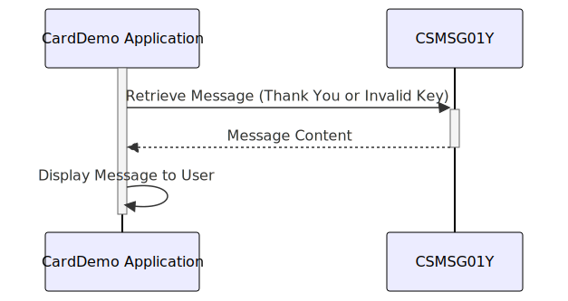

Gerado em: 1º de outubro de 2024
Título do Documento: Aplicativo CardDemo - Especificação do Repositório de Mensagens Comuns
Descrição Resumida:
Este documento descreve a funcionalidade do arquivo CSMSG01Y.cpy dentro do aplicativo CardDemo. Este arquivo atua como um repositório central para mensagens comuns do usuário, garantindo a consistência na comunicação em todo o aplicativo.
Histórias do Usuário:
Como desenvolvedor do aplicativo, preciso de mensagens predefinidas para fornecer feedback claro e consistente aos usuários sobre suas ações no aplicativo CardDemo.
Epic Relacionado:
9 - Utilitários do Sistema
Requisitos Funcionais:
- O sistema deve fornecer mensagens predefinidas para interações comuns do usuário, como operações bem-sucedidas e entrada inválida.
- As mensagens devem ser armazenadas em um local central acessível a diferentes partes do aplicativo.
Requisitos Não Funcionais:
- As mensagens devem ser claras, concisas e facilmente compreensíveis pelos usuários finais.
- O repositório de mensagens deve ser sustentável e escalável para acomodar futuras adições ou modificações de mensagens.
Critérios de Aceitação:
- O arquivo
CSMSG01Y.cpy deve conter as mensagens definidas para uma mensagem de “Obrigado” e uma mensagem de “Chave Inválida”.
- As mensagens devem ser usadas de forma consistente no aplicativo CardDemo, onde aplicável.
Melhorias de Código:
- Suporte Multilíngue: Considere adicionar suporte para vários idiomas para tornar o aplicativo CardDemo acessível a um público maior. Isso pode envolver o uso de variáveis para armazenar mensagens em diferentes idiomas e um mecanismo para selecionar o idioma apropriado com base nas preferências do usuário ou nas configurações do sistema.
- Personalização de Mensagem: Explore a permissão de personalização limitada de mensagens para alinhar com os requisitos específicos de negócios. Por exemplo, você pode permitir a alteração do nome do aplicativo na mensagem de agradecimento, preservando a estrutura e o tom gerais.
Melhorias de Segurança:
- Nenhuma melhoria de segurança direta é necessária para este arquivo específico, pois ele não lida com dados confidenciais. No entanto, certifique-se de que quaisquer dados exibidos ao usuário usando essas mensagens sejam sanitizados e protegidos adequadamente para evitar vulnerabilidades como cross-site scripting (XSS).
Diagrama Conceitual:

–Made by “Smart Engineering” (by Compass.UOL)–